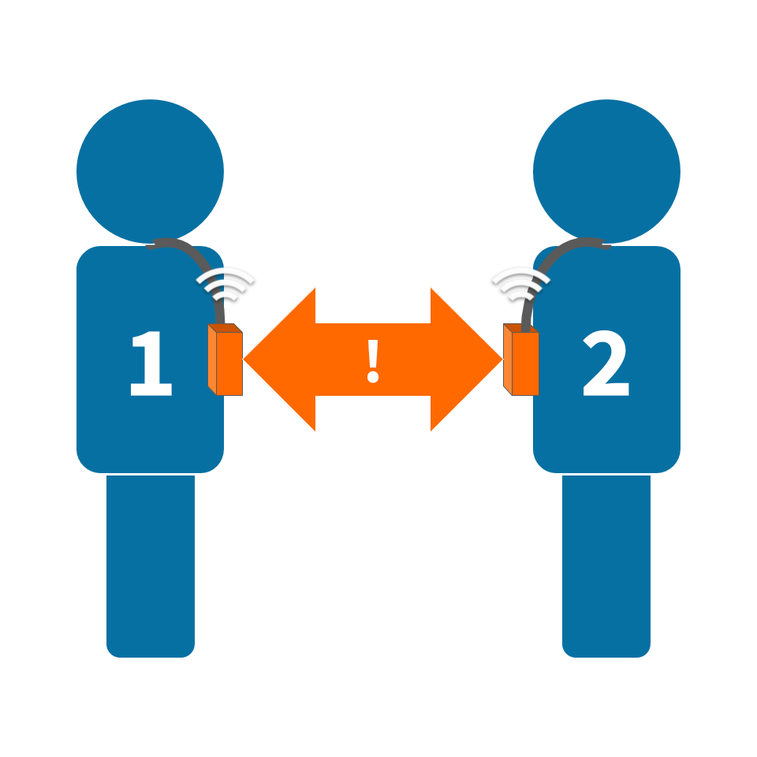
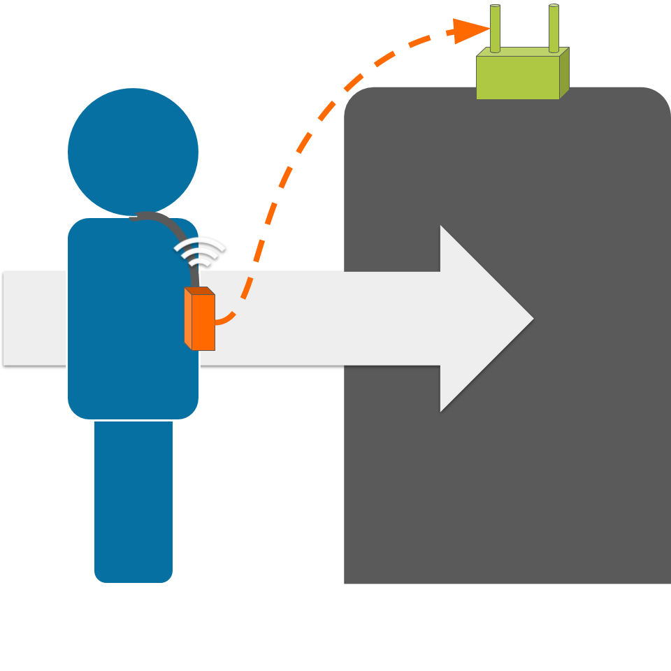
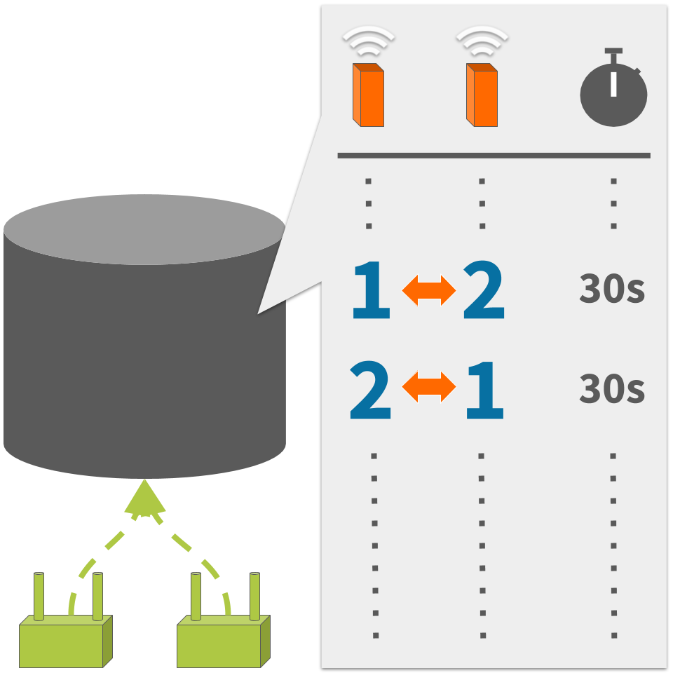

COVID-19 Solutions
Open source and readily deployable
The time for innovation is now
We have mature technology solutions ready to tackle crisis challenges today, which are nonetheless designed to provide an edge in the world of tomorrow. We're in this together. We'll emerge from this stronger together.
Digital Contact Tracing
Who interacted with whom?
DirAct™ embedded software is unique in providing the flexibility to select hardware to suit requirements. Dedicated infrastructure minimises operational burdens while maximising reliability and confidence in the collected data.
Proximity Detection
Device-agnostic
Data Collection
Infrastructure-agnostic
Interaction Tracing
Database-agnostic
Case Study: USC
Researchers at the University of Southern California are using this architecture for an unrelated study since late 2019, in their case with:
- Minew E8 beacons programmed with DirAct™
- reelyActive Owl-in-Ones
- Hosted Elasticsearch Service
One infrastructure, multiple use cases
COVID-19 spreads through the physical spaces in which people work, live, visit and interact. Infrastructure enables these physical spaces to sense their occupants so that this real-time and historic information can be distributed wherever and whenever required.
Using the wireless infrastructure already present in physical spaces, or rapidly deploying reelyActive hardware either temporarily or permanently, enables countless use cases which, especially when combined, catalyse pandemic mitigation initiatives.
Our founding innovation is infrastructure, which has been rapidly deployed in hospitals, airports, workplaces, retail spaces and even military bases.
Occupancy Analytics
Where are people spending time and when?
Infrastructure alone is required to observe the signals already present from mobile/wearable devices carried by occupants.
- detect queues and estimate wait times
- prioritise disinfection of high-traffic areas
- divert occupants towards lower-traffic areas
Personnel and Asset Tracking
How to best manage human and material resources?
Distribute inexpensive Bluetooth badges to staff and affix beacons to critical assets.
- reduce search and response times
- coordinate operations in real-time
- alleviate staff communication burdens
Interaction Traceability
Who interacted with whom and with what?
Distribute DirAct badges to staff and/or visitors. Ask us about our the experience of our friends at USC in deploying this technology in a healthcare environment.
Environmental Sensing
What else is happening in my space?
Deploy sensor beacons to monitor environmental factors and interactions.
- monitor a mailbox, disposal bin, etc.
- estimate visitor counts from door events
- react to anomalies in the environmental conditions of abandoned spaces
Open source for permissionless innovation
Both our Pareto Anywhere software and the Elastic Stack with which it is tightly coupled are open source.
Start Developing
Make an impact in your community: rapidly prototype solutions with whatever is readily available, for instance using Raspberry Pis, which we've documented in detail.
Get Owl-Equipped
Transform your space: deploy a turnkey solution to tackle crisis challenges today, emerging with a digital transformation edge in anticipation of the world of tomorrow.
Wherever you find yourself, we're here to help.
Stay healthy. Stay innovative.